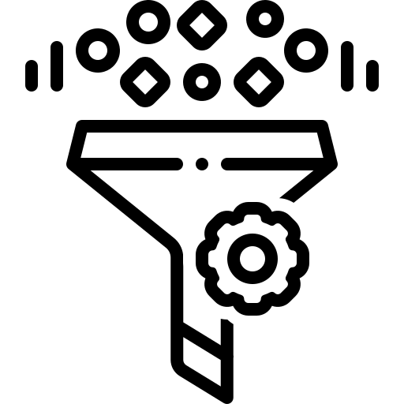
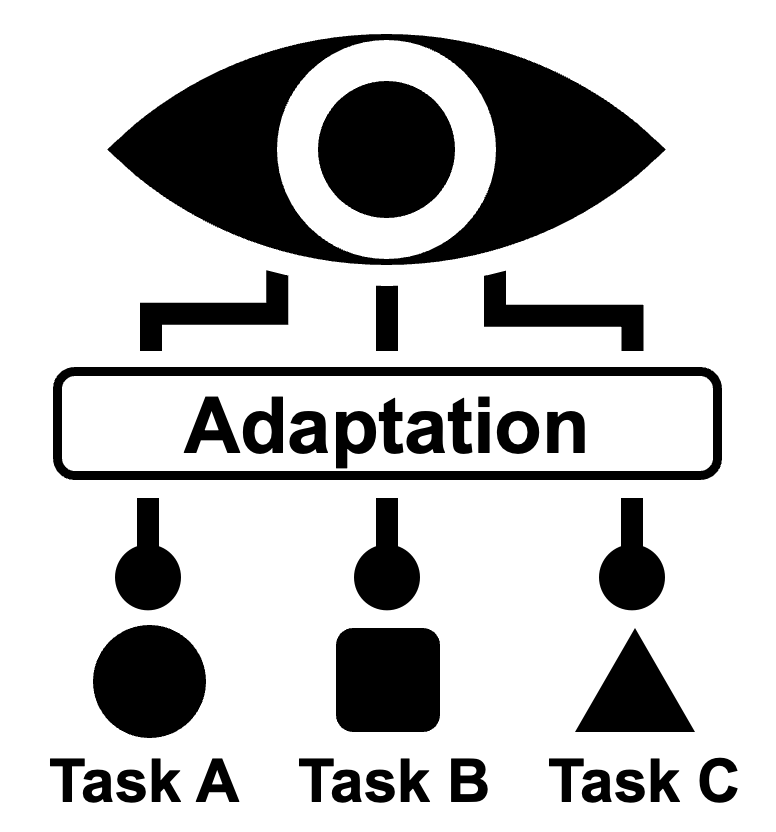
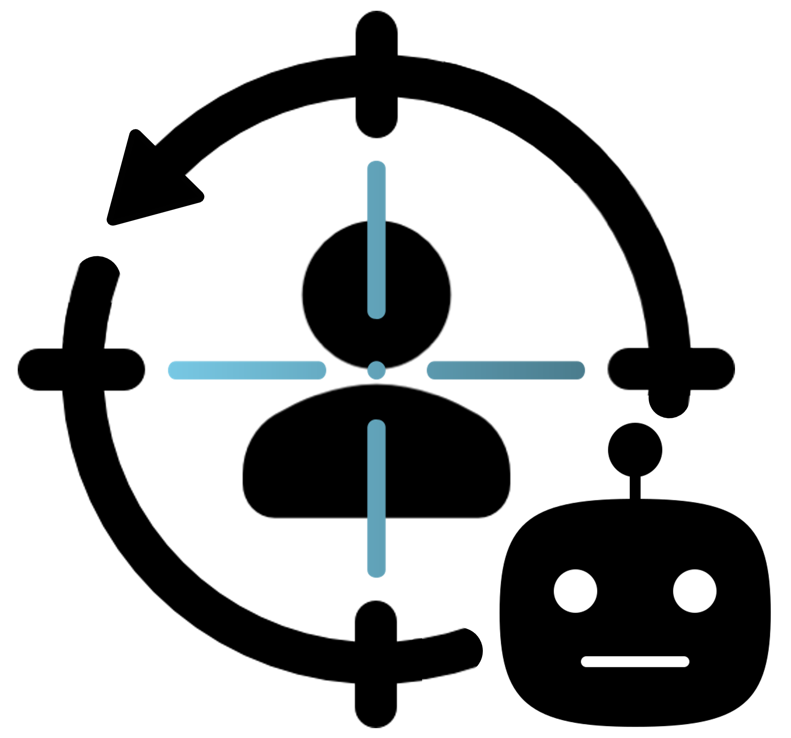
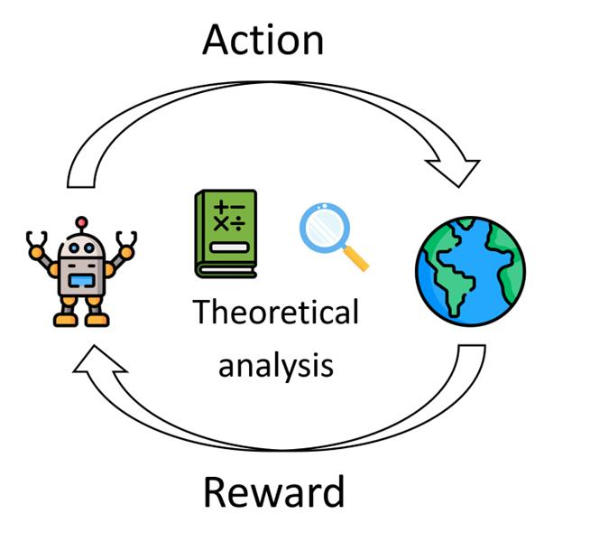

# Research Participation (for Undergrad Students)
MLLab always welcomes undergraduate students to participate in research. The projects below are the research topics that the lab is currently interested in and intends to proceed. Interested undergraduate students should check the list before applying for research participation and contact their advisor via email. This page will be continuously updated. (Last modified )

# Machine Learning Free Topics - Advisors: All
Any other interesting research ideas other than the topics listed below? It looks interesting, but are you wondering if this is also machine learning research? If you want to learn machine learning but don't know where to start, feel free to contact us anytime!
-

# Machine Unlearning in Text-to-Image Generative Models - Advisor: Dongwoo Kim, Mentor: Saemi Moon, Minjong Lee
Generative models have made significant advancements in producing high-quality images, but they also pose risks by potentially generating harmful, explicit, or privacy- and copyright-infringing content. To address these concerns, we aim to develop methods that allow models to “unlearn” problematic concepts, thereby enhancing the ethical and safe deployment of these models.
References- Moon, Saemi, Seunghyuk Cho, and Dongwoo Kim. "Feature Unlearning for Pre-trained GANs and VAEs" AAAI 2024.
- Kumari, Nupur, et al. "Ablating Concepts in Text-to-Image Diffusion Models" NeurIPS 2023.
- Gandikota, Rohit, et al. "Erasing Concepts from Diffusion Models" ICCV 2023.
-
# Advanced Planning for Robots with Multimodal Large Language Models - Advisor: Jungseul Ok, Mentor: Hyejin Park
Recent advances in AI have enabled robots to perform simple tasks based on language instructions. However, they struggle to handle long-term tasks in complex environments, due to difficulties in integrating visual observations with language instructions, and planning subsequent actions accordingly. In this study, we develop methods leveraging multimodal large language models to help robots interpret their visual surroundings and plan more effectively, ultimately enabling them to perform real-world tasks successfully.
References- Zhou, Gengze, et al. "NavGPT-2: Unleashing Navigational Reasoning Capability for Large Vision-Language Models" ECCV 2024.
- Li, Zaijing, et al. "Optimus-1: Hybrid Multimodal Memory Empowered Agents Excel in Long-Horizon Tasks" NeurIPS 2024.
-

# Trustworthy Foundational Models - Advisor: Jungseul Ok, Mentor: Jinhwan Nam
Foundation models excel across diverse tasks, but they risk generating harmful content, leaking sensitive information, or producing biased responses—either unintentionally or through adversarial manipulation. To address these risks, we aim to develop robust methods that ensure reliable and secure model deployments.
References- Carlini, Nicholas, et al. "Extracting Training Data from Diffusion Models" USENIX Security 2023.
- Wen, Yuxin, et al. "Detecting, Explaining, and Mitigating Memorization in Diffusion Models" ICLR 2024.
- Rando, Javier, et al. "Adversarial ML Problems Are Getting Harder to Solve and to Evaluate" arXiv 2025.
-

# Foundational Datasets for VLMs - Advisor: Jungseul Ok, Mentor: Hoyoung Kim
Vision-Language Models (VLMs) leverage large-scale multimodal datasets, such as image-text and video-text pairs, to learn cross-modal representations. While the abundance of data has driven significant advancements, it also presents challenges. First, excessive data volume increases computational costs and reduces training efficiency, making it difficult to extract high-quality representations. Additionally, such datasets contain noisy annotations, redundant samples, and domain biases, all of which can negatively impact model performance. Our research aims to evaluate the effect of dataset quality on VLM training, develop filtering techniques to eliminate noisy and redundant data, and explore strategies for generating high-quality synthetic data to enhance learning efficiency.
References- Zhuang Liu and Kaiming He. "A Decade's Battle on Dataset Bias: Are We There Yet?" ICLR 2025.
- Liu, Zheng, et al. "SynthVLM: High-Efficiency and High-Quality Synthetic Data for Vision Language Models" KDD 2025.
- Wang, Yiping et al. "CLIPLoss and Norm-Based Data Selection Methods for Multimodal Contrastive Learning" NeurIPS 2024.
-

# Unleashing Potential of Visual Foundational Models - Advisor: Jungseul Ok, Mentor: Jeongjin Kim
Recent developments in visual foundation models, such as Vision Transformers (ViTs), Swin Transformers, and self-supervised learning techniques like DINO and Masked Autoencoders (MAE), have significantly improved image understanding and generalization. These advancements enable more efficient learning from large-scale, unlabeled data and enhance multimodal capabilities, as seen in models like CLIP or Flamingo. However, training such models from scratch is resource-intensive, making the utilization of pretrained models crucial for optimizing performance. By leveraging techniques like transfer learning, LoRA-based fine-tuning, and visual/textual prompting, existing models can be adapted for specific tasks with minimal computational cost while maintaining high accuracy. This approach not only accelerates deployment but also maximizes scalability and accessibility, ultimately unleashing the full potential of visual foundation models across various industries.
References- Radford, Alec, et al. "Learning Transferable Visual Models From Natural Language Supervision" ICML 2021.
- Yao, Hantao, et al. "Visual-Language Prompt Tuning with Knowledge-guided Context Optimization" CVPR 2023.
-

# Human-in-the-Loop Personalization - Advisor: Jungseul Ok, Mentor: Minhyeon Oh
Recently, we are moving beyond simply making AI systems more powerful and towards making them more human-centered—tailored to individual needs, preferences, and contexts. This requires AI to contextually learn and adapt based on user interaction, actively incorporating implicit user feedback and guidance into its response process. Therefore, we are developing AI that: (1) deeply understands dynamic user needs and contexts, leveraging implicit feedback; (2) exhibits context-aware learning, recognizing preference shifts across situations and adapting accordingly; and (3) provides interpretable personalization parameters, giving users more direct control. Participants in this study will contribute to our ongoing efforts to this development.
References- Oh, Minhyeon, et al. "Comparison-based Active Preference Learning for Multi-dimensional Personalization" arXiv 2025.
- Hwang, Minyoung, et al. "Promptable Behaviors: Personalizing Multi-Objective Rewards from Human Preferences" CVPR 2024.
- Gao, Ge, et al. "Aligning LLM Agents by Learning Latent Preference from User Edits" NeurIPS 2024.
-
# Post-hoc Explainable AI with LLMs - Advisor: Jungseul Ok, Mentor: Jaechang Kim
Post-hoc explainability is essential for improving the transparency and trustworthiness of machine learning models. Traditional methods, such as saliency maps, provide valuable insights into model decisions but often require domain expertise to interpret effectively. With the rise of LLMs, natural language explanations have emerged as a more accessible and flexible alternative, allowing users to engage with model reasoning in an intuitive way. This project explores how LLMs can generate contextually rich and faithful explanations while maintaining alignment with the underlying model’s decision-making process. We investigate techniques that enhance interpretability through structured reasoning and interactive dialogue, ultimately contributing to the development of more transparent and user-friendly AI systems.
References- Slack, Dylan, et al. "Explaining Machine Learning Models with Interactive Natural Language Conversations using TalkToModel" Nature Machine Intelligence 2023.
- Xingyi Yang and Xinchao Wang. "Language Model as Visual Explainer" NeurIPS 2024.
- Kim, Jaechang, et al. "Bridging the Gap between Expert and Language Models: Concept-guided Chess Commentary Generation and Evaluation" NAACL 2025.
-

# Theoretical Analysis for Online Learning - Advisor: Jungseul Ok, Mentor: SeockBean Song
Online learning involves algorithms that make decisions and learn from data sequentially. We aim to develop a solid theoretical foundation to understand and evaluate the performance of these methods. In this project, students will study the core principles of online learning, including performance analysis, regret minimization, and the development of provably efficient algorithms.
References- Shipra, Agrawal, and Navin, Goyal. "Near-Optimal Regret Bounds for Thompson Sampling" JACM 2017.
- Song, Seockbean, et al. "Combinatorial Rising Bandit" arXiv 2024.
-

# Hierarchical Planning for Efficient Exploration - Advisor: Jungseul Ok, Mentor: Youngsik Yoon
Hierarchical planning is essential for efficient exploration in Reinforcement Learning (RL), as it helps agents structure decisions across different levels. By focusing on high-level goals before refining low-level actions, it enables smarter exploration in complex environments. For example, in path planning tasks, hierarchical strategies can optimize route selection, while in LLM-based planning, they can help structure tasks into manageable subgoals. This approach is particularly effective in long-horizon tasks and sparse reward settings, where traditional methods often lead to inefficient exploration and slow learning. In this study, we explore how hierarchical planning can accelerate exploration and improve learning efficiency in RL.
References- Ok, Jungseul, et al. "Exploration in Structured Reinforcement Learning" NeurIPS 2018.
- Yoon, Youngsik, et al. "Breadth-First Exploration on Adaptive Grid for Reinforcement Learning" ICML 2024.
- Sungjae Lee*, Hyejin Park, Jaechang Kim, and Jungseul Ok. "Semantic Exploration with Adaptive Gating for Efficient Problem Solving with Language Models" arXiv 2025.
-

# Geometry Problem Solving with Vision Language Model - Advisor: Dongwoo Kim, Mentor: Seunghyuk Cho
Large language model (LLM) shows impressive performance on highschool-level mathematical reasoning, i.e., calculus and algebra. However, LLM is still weak at certain areas of mathematical reasoning, e.g., geometry. In this work, we incorporate visual information of the geometry problem and vision language model (VLM) to enhance the mathematical reasoning performance on geometry problems.
References- Trinh, T.H., Wu, Y., Le, Q.V. et al., "Solving olympiad geometry without human demonstrations" Nature 2024.
- Renrui Zhang, et al. "MathVerse: Does Your Multi-modal LLM Truly See the Diagrams in Visual Math Problems?" ECCV 2024.
- Renrui Zhang, et al. "MAVIS: Mathematical Visual Instruction Tuning" arXiv 2024.
-

# Graph Learning Enhancement by Structural Modifications - Advisor: Dongwoo Kim, Mentor: Jaeseung Heo
Using high-quality data is crucial for training accurate machine learning models. Graph data, which includes structural information in the form of edges, offers unique opportunities for improving model performance. Graph learning enhancement aims to refine this structural information by removing noise and emphasizing more informative patterns. Techniques such as edge rewiring, which modifies connections between nodes, node dropping, which removes less important nodes, and label smoothing, which adjusts labels to reduce overconfidence, all leverage the inherent relationships in the graph to improve model accuracy and generalization.
References- Yu Rong, et al., "DropEdge: Towards Deep Graph Convolutional Networks on Node Classification" ICLR 2020.
- Xiaotian Han, et al., "G-Mixup: Graph Data Augmentation for Graph Classification" ICML 2022.
- Kaixiong Zhou, et al. "Adaptive Label Smoothing To Regularize Large-Scale Graph Training" SDM 2023.
-

# Deep Learning Application for Scientific Discovery - Advisor: Dongwoo Kim, Mentor: Seungbeom Lee
This research focuses on applying deep learning to the field of scientific discovery. Specifically, we aim to build model architectures tailored to each scientific domain while efficiently incorporating inductive biases, such as geometric priors, to address various scientific challenges. Our work has broad applications in areas such as molecule generation, molecular property prediction and drug-target binding pose estimation.
References- Ying, Chengxuan, et al. "Do Transformers Really Perform Bad for Graph Representation?" NeurIPS 2021.
- Corso, Gabriele, et al. "DiffDock: Diffusion Steps, Twists, and Turns for Molecular Docking" ICLR 2023.
- Xu, Minkai, et al. "Geodiff: A geometric diffusion model for molecular conformation generation." ICLR 2022.
-

# Reward Models for Personalized LLMs - Advisor: Dongwoo Kim, Mentor: Youngbin Choi
Reinforcement Learning from Human Feedback (RLHF) allows models to generate outputs aligned with human preferences, such as helpfulness and harmfulness. However, current reward models tend to reflect majority preferences, often neglecting those of individuals or minority groups. This study aims to create personalized reward models to enable the development of more individualized language models (LLMs).
References- Chakraborty, Qiu, et al., "MaxMin-RLHF: Towards Equitable Alignment of Large Language Models with Diverse Human Preferences" ICML 2024.
- Siththaranjan, Laidlaw, et al. "Distributional Preference Learning: Understanding and Accounting for Hidden Context in RLHF" ICLR 2024.
- Poddar, Wan, et al. "Personalizing Reinforcement Learning from Human Feedback with Variational Preference Learning" arXiv 2024.
-

# Learning to Combat the Hallucination of Large Language Models - Advisor: Sangdon Park
Large Language Models (LLMs) confidently generate wrong information, which undermines the trust of LLMs as a knowledge base. How to mitigate this? This question has been actively emerged due to the power of ChatGPT. In this research project, we will explore learning methods (e.g., conformal prediction) to answer this question.
References- Andrew Ng’s Twitter Post on the overconfidence of LLMs
- Sangdon Park and Taesoo Kim PAC Neural Prediction Set Learning to Quantify the Uncertainty of Generative Language Models arXiv 2023
-

# Uncertainty Learning via Conformal Prediction - Advisor: Sangdon Park
As ML models are used in practical environments, e.g., ChatGPT or drones, the concerns on the trustworthiness of model predictions have been greatly emerged. In particular, we are interested in rigorous uncertainty learning as the basis for the correctness of predictions, and conformal prediction is a promising method for rigorous uncertainty learning. However, its correctness guarantees depend on the assumptions of data distributions. In this research project, we explore and design practical learning algorithms for conformal prediction under various distributional assumptions.
References- Vladimir Vovk et al. Algorithmic Learning in a Random World 2005
- Anastasios Angelopoulos et al. Uncertainty Sets for Image Classifiers using Conformal Prediction ICLR 2021
- Sangdon Park et al. PAC Confidence Sets for Deep Neural Networks via Calibrated Prediction ICLR 2020
-

# Security and Privacy of LLMs - Advisor: Sangdon Park
The power of LLMs and their daily life use bring concerns on security and privacy issues (e.g., vulnerable code generation and privacy leakage). Then, how severe are the security and privacy issues? How to efficiently and effectively unlearn the issues in LLMs? In this project, we will evaluate LLMs security and privacy concerns and design learning algorithms for mitigation.
-

# LLMs for Code Vulnerability Discovery - Advisor: Sangdon Park
Finding source or binary code vulnerabilities is a long-standing and never-ending problem. The recent advance in LLMs potentially provides clues to further advance the current code vulnerability discovery performance. In this project, we will explore the potentials of LLMs in finding code vulnerabilities.